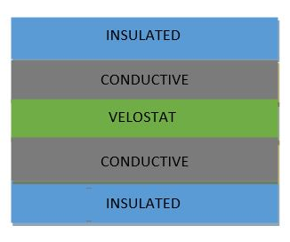
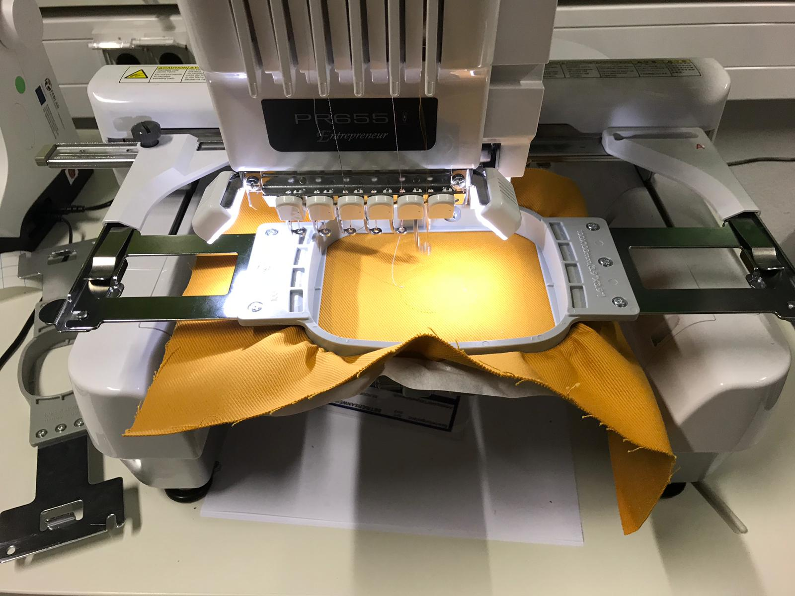
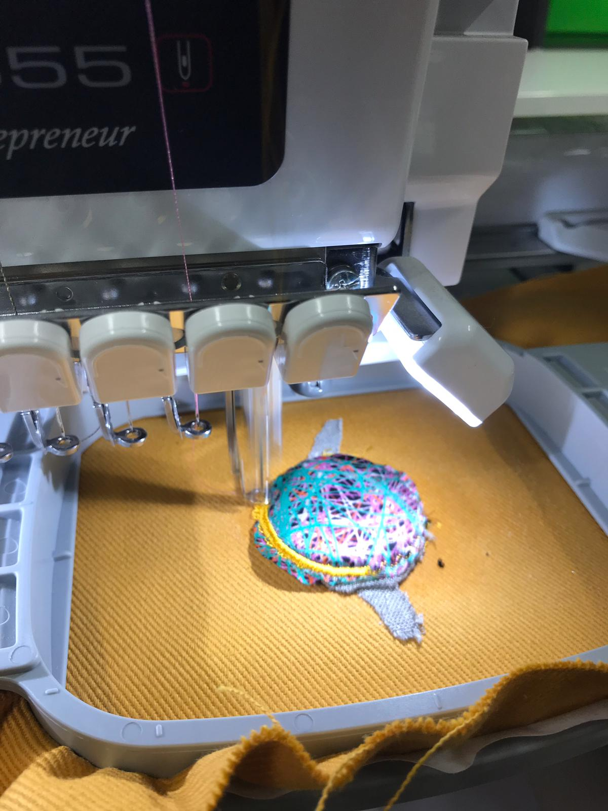
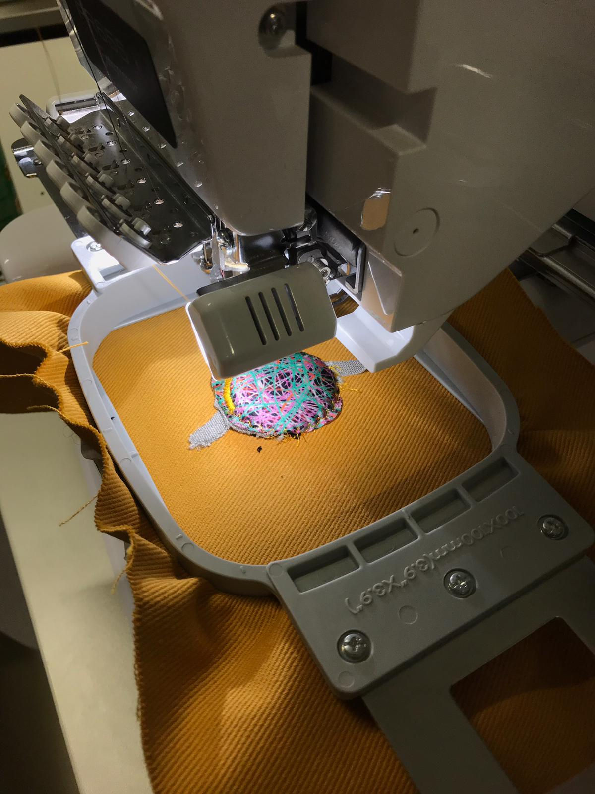
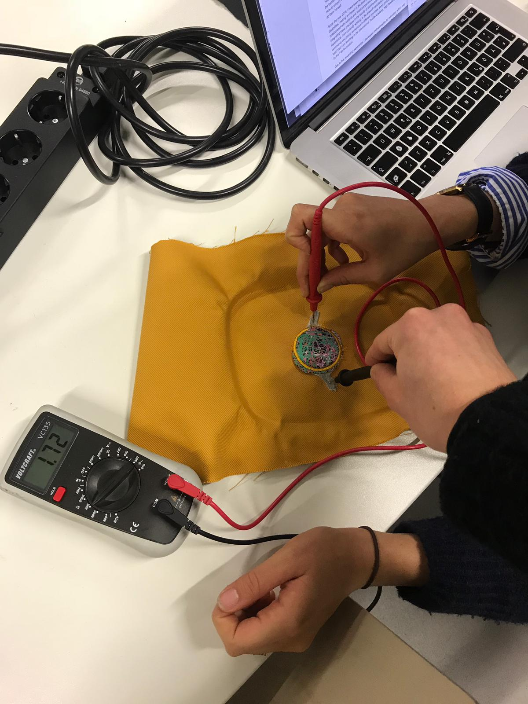
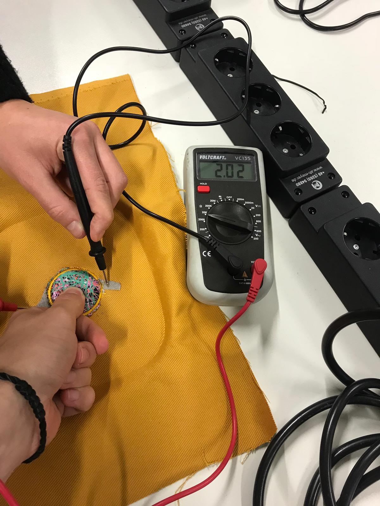

WEARABLES DIY SENSORS
Pressure Sensor is a device that senses pressure and converts it into an electric signal where the amount depends upon the pressure applied.
For being able to develop our pressure sensor, three different kind of materials were used. As it is shown in the below picture, these materials have to be positioned in different layers.

--> Velostat is a packaging material made of a polymeric foil (polyolefins) impregnated with carbon black to make it electrically conductive.
--> Insulated material is a material that reduces or prevents the transmission of heat, sound or electricity as it is in our case.
--> Conductive material is which allows the flow of an electrical current in one or more directions.
It is noteworthy that I used the knitting machine for doing my wearable DIY sensor. Due to it, to select the properly needles were necessary. Those of our interest might be in position B while all the rest had to be in position A.
I sewed layer by layer. Firstly, I placed the insulated fabric in the properly position and I set the knitting machine to work (It was following a design that it was already choosen by using the computer).

Then, the conductive fabric, the velostat and the conductive again, were placed over the circle that had already been sewn.
Finally, the last insulated fabric was positionated on the top of our design as we can see in the following images.
 
Once I had my Pressure Sensor develop, its operation was checked with the help of a potentiometer. The electrical potential or the electrostatic potential at a point is the work an electrostatic field must do to move a positive charge from this point to the reference point, divided by test load unit.
As it can be shown in the following pictures, the voltage is different when pressing the button, which means that the wearable DIY sensor works properly.
 